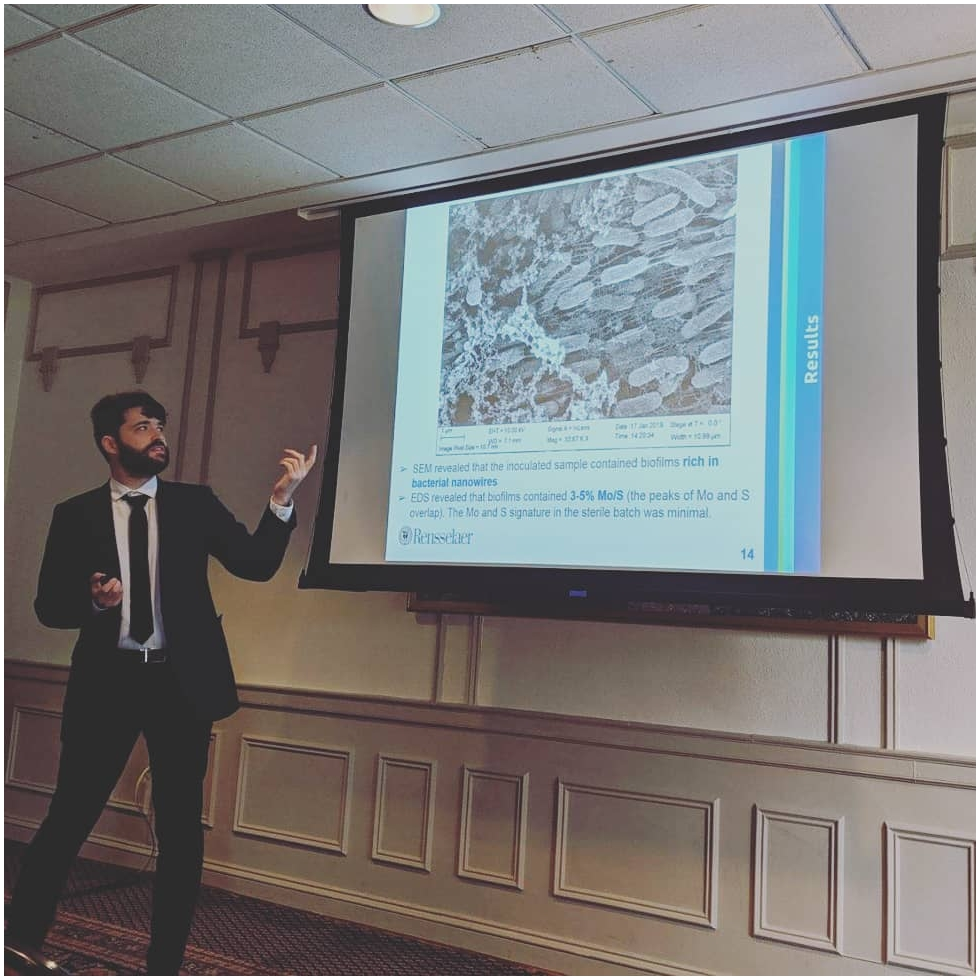

Dylan Rees holds a PhD in Electrical Engineering from Rensselaer Polytechnic Institute in Troy, NY, where he is currently based.
His current research combines electromicrobiology with electronic materials and device engineering.
He is also interested in sustainability, socially-situated engineering, urban agriculture, and the application
of social science and humanities research to the practice of science and technology.
cv github
github academic
academic blog
blog instagram
instagram projects
email: dylanrees at protonmail dot ch
projects
email: dylanrees at protonmail dot ch